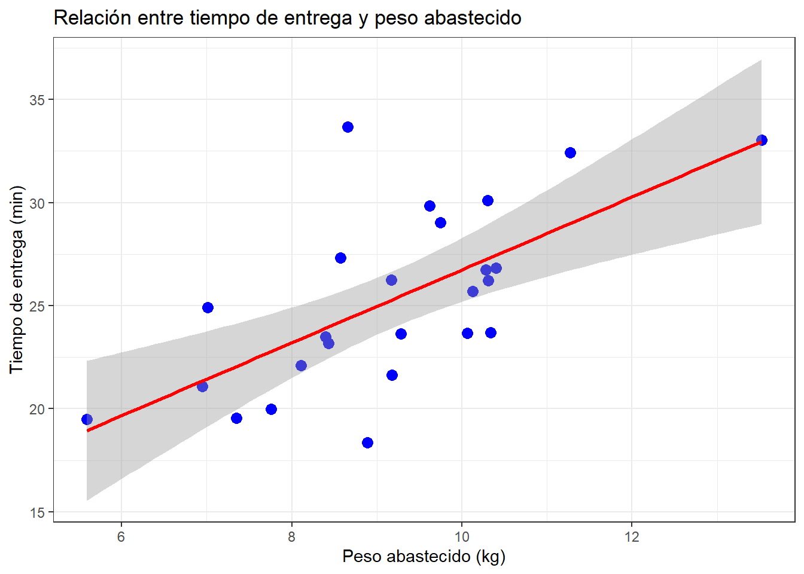
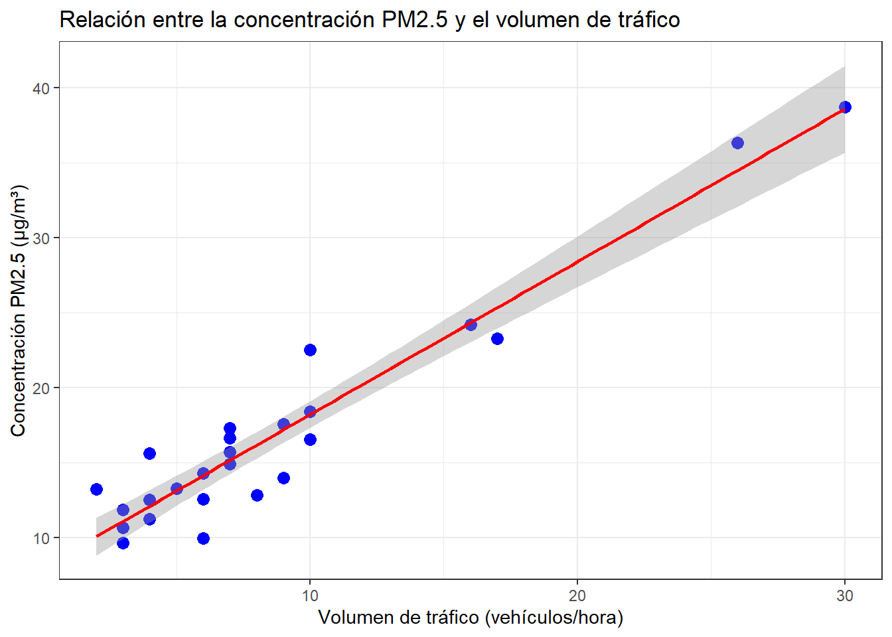

Capítulo 6 Correlación y regresión lineal simple
La correlación y la regresión lineal simple son herramientas fundamentales en el análisis estadístico para estudiar la relación entre dos variables cuantitativas. La correlación, mediante el coeficiente de Pearson, mide la intensidad y dirección de la asociación lineal, permitiendo identificar si las variables se mueven en el mismo sentido, en sentido opuesto o si no presentan relación lineal. Por su parte, la regresión lineal simple no solo describe la relación, sino que establece un modelo matemático que permite predecir el comportamiento de una variable dependiente a partir de una variable independiente, expresado a través de una ecuación lineal. Mientras la correlación se enfoca en cuantificar la fuerza de la relación, la regresión ofrece un marco para la estimación y la predicción.
Algunos textos que tomaremos para el desarrollo del contenido son (Navidi 2021), (Montgomery, Peck, and Vining 2012) y (Solano 2019).
6.1 Definiciones y teorema de correlación
Recordemos los conceptos de momento, varianza, desviación estandar y covarianza
- Sea \(X\) una variable aleatoria real. El k–ésimo momento central de \(X\) alrededor de cero, denotado por \(m_k\), se define como: \[ m_k(X) := E(X^k) \] siempre y cuando el valor esperado exista.
- Sea \(X\) una variable aleatoria real cuyo valor esperado existe. El k–ésimo momento central de \(X\) alrededor de \(E(X)\) se define como: \[ \mu_k(X) := E\left[(X - E(X))^k\right] \] siempre y cuando el valor esperado exista.
- Para \(k = 2\), la varianza de \(X\) es: \[ Var(X) := \mu_2(X) = E\left[(X - E(X))^2\right]. \] Y la desviación estándar es: \[ \sigma = \sqrt{Var(X)}, \quad \text{donde } E(X) < \infty. \]
Sean \(X\) una variable aleatoria, cuyo valor esperado existe, y \(a, b \in \mathbb{R}\). Entonces:
- \(Var(X) \geq 0\)
- \(Var(a) = 0\)
- \(Var(aX) = a^2 Var(X)\)
- \(Var(X + b) = Var(X)\)
- \(Var(X) = 0\), si y sólo si, \(P(X = E(X)) = 1\)
- \(Var(X) = E(X^2) - (E(X))^2\)
Demostración del teorema
Solo probemos que \(Var(X) = E(X^2) - (E(X))^2\). En efecto
\[ \mathrm{Var}(X) = \mathbb{E}\left[(X - \mathbb{E}[X])^2\right] \]
Aplicando la identidad del binomio cuadrado se tiene que
\[ (X - \mathbb{E}[X])^2 = X^2 - 2\,\mathbb{E}[X]\,X + (\mathbb{E}[X])^2. \]
Al tomar la esperanza y usando la propiedad de linealidad de \(\mathbb{E}\) se sigue que
\[ \mathbb{E}\left[X^2 - 2\,\mathbb{E}[X]\,X + (\mathbb{E}[X])^2\right] = \mathbb{E}[X^2] - 2\,\mathbb{E}[X]\,\mathbb{E}[X] + (\mathbb{E}[X])^2 \]
Finalmente, simplificando se obtiene que
\[ \mathrm{Var}(X) = \mathbb{E}[X^2] - \left(\mathbb{E}[X]\right)^2.\quad \square \]
Sean \(X, Y\) variables aleatorias reales sobre un espacio de probabilidad \((\Omega, \mathcal{F}, P)\) con esperanza y varianza finita. Entonces, la cantidad:
\[ Cov(X, Y) := E\left[(X - E(X))(Y - E(Y))\right] \in \mathbb{R}, \]
es la llamada covarianza de \(X\) y \(Y\).
El coeficiente de correlación de \(X\) y \(Y\) está definido por:
\[ \rho := \rho(X, Y) := \frac{Cov(X, Y)}{\sqrt{Var(X)Var(Y)}} \]
Sean \((\Omega, \mathcal{F}, P)\) un espacio de probabilidad y \(X, Y\) variables aleatorias reales sobre \((\Omega, \mathcal{F}, P)\) con varianza finita. Entonces:
- \(Cov(X, X) = Var(X)\)
- \(Cov(X, Y) = Cov(Y, X)\)
- \(Cov(aX + b, Y) = a \, Cov(X, Y)\) para todo \(a, b \in \mathbb{R}\)
- \([Cov(X, Y)]^2 \leq Var(X) \, Var(Y)\)
- \(Cov(X, Y) = E(XY) - E(X)E(Y)\), es decir, \(X\) y \(Y\) son incorreladas si y sólo si \(Cov(X, Y) = 0\)
- Si \(X\) y \(Y\) son independientes, entonces \(Cov(X, Y) = 0\)
Demostración del teorema
Demostraremos que \(Cov(aX + b, Y) = a \, Cov(X, Y)\) para todo \(a, b \in \mathbb{R}\). En efecto
\[ \begin{align*} Cov(aX+b, Y) &= E\left[(aX+b - E[aX+b]) (Y - E[Y])\right]\\ & = E\left[(aX+b - (aE[X]+b)) (Y - E[Y])\right]\\ & = E\left[(aX+b - aE[X]-b) (Y - E[Y])\right]\\ & = E\left[(aX - aE[X]) (Y - E[Y])\right]\\ & = E\left[a(X - E[X]) (Y - E[Y])\right]\\ & = a E\left[(X - E[X]) (Y - E[Y])\right]\\ & = aCov(X, Y). \quad \square \end{align*} \]
Sean \(X\) e \(Y\) variables aleatorias reales con \(Var(X), Var(Y) < \infty\).
- \(\rho(X, Y) = \rho(Y, X)\)
- \(|\rho(X, Y)| \leq 1\)
- \(\rho(X, X) = 1\) y \(\rho(X, -X) = -1\)
- \(\rho(aX + b, Y) = \rho(X, Y)\)
- \(\rho(X, Y) = 1\) si y sólo si existen constantes \(a, b \in \mathbb{R}\) no simultáneamente cero tales que \(P(Y = aX + b) = 1\)
Demostración del teorema
Sea \(\sigma_X^2 = \mathrm{Var}(X)\) y \(\sigma_Y^2 = \mathrm{Var}(Y)\) finitas y positivas.
Hagamos la estandarización
\[ U = \frac{X - E(X)}{\sigma_X}, \quad V = \frac{Y - E(Y)}{\sigma_Y}, \]
por lo que \(E(U) = E(V) = 0\), \(\mathrm{Var}(U) = \mathrm{Var}(V) = 1\) y
\[ \rho(X,Y) = \frac{\mathrm{Cov}(X,Y)}{\sigma_X \sigma_Y} = E\!\left[ \frac{(X - E(X))(Y - E(Y))}{\sigma_X \sigma_Y} \right] = E(UV). \]
Aplicando la desigualdad de Cauchy–Schwarz tenemos que
\[ |E(UV)| \le \sqrt{E(U^2) \cdot E(V^2)}. \]
por lo que
\[ E(U^2) = E\left[ \frac{(X - E(X))^2}{\sigma_X^2} \right] = \frac{E[(X - E(X))^2]}{\sigma_X^2} = \frac{\mathrm{Var}(X)}{\sigma_X^2} = \frac{\sigma_X^2}{\sigma_X^2} = 1, \]
y análogamente \(E(V^2) = 1\). Por lo tanto
\[ |E(UV)| \le \sqrt{1 \cdot 1} = 1. \]
Como \(\rho(X,Y) = E(UV)\), se sigue que
\[ |\rho(X,Y)| \le 1. \quad \square \]
6.2 Análisis de correlación simple (dos variables)
En estadística, la correlación describe la relación cuantitativa entre dos variables medidas en escalas ordinales, de intervalos o de razón. Nos interesa especialmente cuantificar la intensidad y dirección de la relación lineal.
Cuando el aumento de una variable viene acompañado del aumento de la otra, la correlación es positiva o directa. Si el aumento de una variable viene acompañado de una disminución en la otra, la correlación es negativa o inversa.
La existencia de correlación no implica causalidad: dos variables pueden estar correlacionadas debido a la influencia de una tercera variable no observada.
Una correlación perfecta ocurre cuando todos los puntos de un diagrama de dispersión forman una línea recta. Estas correlaciones (positivas o negativas) son muy poco frecuentes fuera de contextos físicos o matemáticos ideales.
6.2.1 Tipos de coeficientes de correlación
- Pearson (\(r\)): método paramétrico, se usa para datos en escala de intervalos o razón, mide la intensidad y dirección de la relación lineal y requiere supuestos como normalidad y homocedasticidad.
- Spearman (\(\rho_S\)): método no paramétrico, basado en rangos, mide la relación monótona entre las variables. Útil cuando no se cumplen los supuestos de Pearson o con datos ordinales.
- Kendall (\(\tau\)): método no paramétrico, basado en la concordancia y discordancia de pares de observaciones. Más robusto frente a valores atípicos y útil en muestras pequeñas o con empates en los datos.
6.2.2 Interpretación del coeficiente de correlación
El coeficiente de correlación varía entre -1 y 1:
| Rango.de.valores | Interpretación |
|---|---|
| -1.00 a -0.75 | Correlación negativa muy fuerte |
| -0.75 a -0.50 | Correlación negativa moderada |
| -0.50 a -0.25 | Correlación negativa débil |
| -0.25 a 0.25 | Sin correlación o muy débil |
| 0.25 a 0.50 | Correlación positiva débil |
| 0.50 a 0.75 | Correlación positiva moderada |
| 0.75 a 1.00 | Correlación positiva muy fuerte |
Un valor \(r = 0\) indica ausencia de correlación lineal, pero no descarta otros tipos de relación. Además, una correlación fuerte puede no ser significativa estadísticamente y una débil puede serlo, dependiendo de factores como el tamaño de muestra, variabilidad y poder de la prueba.
6.2.3 Correlación de Pearson
El coeficiente de correlación de Pearson es una medida estadística que cuantifica la intensidad y dirección de la relación lineal entre dos variables cuantitativas. Su valor está acotado entre \(-1\) y \(1\):
- \(r = 1\): relación lineal positiva perfecta.
- \(r = -1\): relación lineal negativa perfecta.
- \(r = 0\): no existe relación lineal.
Se trata de una medida paramétrica y su uso adecuado requiere que se cumplan ciertos supuestos estadísticos.
Sea \((X, Y)\) un par de variables aleatorias con varianza finita, el coeficiente de correlación de Pearson se define como:
\[ \rho = \frac{\mathrm{Cov}(X, Y)}{\sigma_X \sigma_Y} \]En su versión muestral, el estimador \(r\) se calcula como
\[ r = \frac{\sum_{i=1}^n (x_i - \bar{x}) (y_i - \bar{y})} {\sqrt{\sum_{i=1}^n (x_i - \bar{x})^2} \, \sqrt{\sum_{i=1}^n (y_i - \bar{y})^2}} \]donde
- \(x_i, y_i\): valores individuales de las variables \(X\) e \(Y\).
- \(\bar{x}, \bar{y}\): medias muestrales.
- \(n\): número total de observaciones.
- \(\sigma_X, \sigma_Y\): desviaciones estándar poblacionales.
- Normalidad: Los datos de ambas variables deben seguir una distribución aproximadamente normal. Puede verificarse mediante pruebas como Shapiro–Wilk o Kolmogorov-Smirnoff u otra prueba o con gráficos de probabilidad normal.
- Linealidad: La relación entre las variables debe ser aproximadamente lineal. Puede evaluarse con un diagrama de dispersión.
- Homoscedasticidad: La variabilidad de una variable debe ser constante a lo largo de todos los valores de la otra.
- Escala de medida continua: Ambas variables deben estar medidas en escala de intervalos o de razón.
- Independencia: Cada observación debe ser independiente de las demás.
Sea \(\rho\) el coeficiente de correlación poblacional y \(r\) el estimador muestral. Consideremos dos casos:
1. Contraste para \(\rho = 0\)
La prueba de hipótesis será
\[ H_0: \rho = 0 \quad \text{vs} \quad H_1: \rho \neq 0 \]
El estadístico de prueba es:
\[ t_0 = \frac{r \sqrt{n - 2}}{\sqrt{1 - r^2}} \]
donde \(n - 2\) son los grados de libertad. Se rechaza \(H_0\) si \(|t_0| > t_{\alpha/2, n-2}\).
2. Contraste para \(\rho = \rho_0 \neq 0\)
Cuando el valor bajo \(H_0\) es distinto de cero, se emplea la transformación de Fisher:
\[ Z = \operatorname{arctanh}(r) = \frac{1}{2} \ln\left( \frac{1 + r}{1 - r} \right) \]
Para \(n \geq 25\), \(Z\) tiene distribución aproximadamente normal con media:
\[ \mu_Z = \operatorname{arctanh}(\rho) = \frac{1}{2} \ln\left( \frac{1 + \rho}{1 - \rho} \right) \]
y varianza
\[ \sigma_Z^2 = \frac{1}{n - 3} \]
El estadístico de prueba es
\[ Z_0 = \left[ \operatorname{arctanh}(r) - \operatorname{arctanh}(\rho_0) \right] \sqrt{n - 3} \]
y se rechaza \(H_0\) si \(|Z_0| > Z_{\alpha/2}\).
Intervalo de confianza para \(\rho\)
Un intervalo de confianza de \(100(1 - \alpha)\%\) para \(\rho\) es:
\[ \tanh\left( \operatorname{arctanh}(r) - \frac{Z_{1-\alpha/2}}{\sqrt{n-3}} \right) \leq \rho \leq \tanh\left( \operatorname{arctanh}(r) + \frac{Z_{1-\alpha/2}}{\sqrt{n-3}} \right) \]
donde \(\tanh(u) = \frac{e^u - e^{-u}}{e^u + e^{-u}}\).
Un embotellador de bebidas gaseosas desea analizar las rutas de servicio de las máquinas expendedoras en su sistema de distribución. El objetivo es evaluar la relación existente entre el tiempo necesario para que el representante de ruta atienda las máquinas expendedoras en una tienda y el peso total de producto que debe abastecer.
Esta labor de servicio incluye dos actividades principales:
- Abastecimiento de la máquina con productos embotellados.
- Mantenimiento y limpieza básica del equipo.
El ingeniero industrial a cargo del estudio ha identificado que, entre las posibles variables, el peso total abastecido (x1, en kg) podría tener un efecto directo sobre el tiempo de entrega (y). Con este fin, se recolectaron 25 observaciones de ambas variables, registradas en el archivo datos_entrega_gaseosa.xlsx.
Preguntas a resolver:
- Realiza un diagrama de dispersión entre las variables tiempo de entrega (min) y peso total abastecido (kg).
- Verificar si las variables tiempo de entrega (min) y peso total abastecido (kg) presentan un comportamiento normal.
- Calcular el coeficiente de correlación de Pearson entre ambas variables.
- Determinar si la correlación obtenida es estadísticamente significativa.
- Calcular el intervalo de confianza para el coeficiente de correlación.
Solución
- Carguemos las librerias a usar
- Carguemos los datos
Code
## # A tibble: 6 × 4
## Observación `Tiempo de entrega (min)` `Peso en Kg` `Distancia (pies)`
## <dbl> <dbl> <dbl> <dbl>
## 1 1 25.7 10.1 474
## 2 2 20.0 7.76 382
## 3 3 19.6 7.35 363
## 4 4 23.6 9.28 416
## 5 5 26.8 10.3 537
## 6 6 27.3 8.57 659- Renombremos las columnas
Code
- Hagamos un diagrama de dispersión
Code

- Veamos si las variables tiempo de entrega y peso abastecido tienen comportamiento normal
##
## Shapiro-Wilk normality test
##
## data: df$tiempo
## W = 0.96225, p-value = 0.4612##
## Shapiro-Wilk normality test
##
## data: df$peso_kg
## W = 0.96538, p-value = 0.5316Con una confianza del \(95\%\), se observa que las distribuciones de tiempo de entrega \((W = 0.96225,\ p\text{-valor} = 0.4612)\) y peso en kg \((W = 0.96538,\ p\text{-valor} = 0.5316)\) provienen de una distribución normal.
- Hallemos la correlación de Pearson paso a paso:
Code
# 1) Vectores y tamaño muestral
x <- df$tiempo
y <- df$peso_kg
n <- length(x)
# 2) promedios
xbar <- sum(x) / n
ybar <- sum(y) / n
# 3) desviaciones
xc <- x - xbar
yc <- y - ybar
Sxy <- sum(xc * yc) # sumatoria de productos centrados
Sxx <- sum(xc^2) # sumatoria de cuadrados centrados de x
Syy <- sum(yc^2) # sumatoria de cuadrados centrados de y
# 4) Coeficiente de correlación de Pearson
r <- Sxy / sqrt(Sxx * Syy)
# 5) Resultados obtenidos y r
tibble(
n = n,
prom_tiempo = xbar,
prom_peso = ybar,
Sxy = Sxy,
Sxx = Sxx,
Syy = Syy,
r_pearson = r
)## # A tibble: 1 × 7
## n prom_tiempo prom_peso Sxy Sxx Syy r_pearson
## <int> <dbl> <dbl> <dbl> <dbl> <dbl> <dbl>
## 1 25 25.3 9.17 111. 449. 63.0 0.662Usando la función de cor tenemos
## [1] 0.6615236- Ahora veamos si la correlación es significativa o no
Code
# 6) Estadístico t para H0: rho = 0
gl <- n - 2
t_0 <- r * sqrt(gl) / sqrt(1 - r^2)
# 7b) Valor crítico t_(α/2, gl) para α = 0.05 (bilateral)
alpha <- 0.05
t_tab <- qt(1 - alpha/2, df = gl)
# mostrar decision
if (abs(t_0) > t_tab) {
decision <- "Rechazar H0: la correlación es significativa"
} else {
decision <- "No rechazar H0: no hay evidencia suficiente de correlación"
}
decision## [1] "Rechazar H0: la correlación es significativa"Code
## [1] 0.0003170025- Hallemos el intervalo de confianza
Code
# 8) Intervalo de confianza del 95% vía Fisher z
# Transformación de r a z de Fisher
z0 <- atanh(r)
# Error estándar de z
se_z <- 1 / sqrt(n - 3)
# Valor crítico z_(1-α/2) para α = 0.05 (bilateral)
alpha <- 0.05
z_tab <- qnorm(1 - alpha / 2)
# Intervalo en la escala z
ci_z <- c(z0 - z_tab * se_z,z0 + z_tab * se_z)
# límite inferior y superior del IC para r
ci_r <- tanh(ci_z)
# Mostrar resultados
ci_r## [1] 0.3606668 0.8376916Usando la función cor.test nos queda:
##
## Pearson's product-moment correlation
##
## data: x and y
## t = 4.2305, df = 23, p-value = 0.000317
## alternative hypothesis: true correlation is not equal to 0
## 95 percent confidence interval:
## 0.3606668 0.8376916
## sample estimates:
## cor
## 0.6615236El análisis de correlación de Pearson entre el peso abastecido (kg) y el tiempo de entrega (min) mostró un coeficiente \(r = 0.6615,\ (IC_{95\%}=(0.3607, 0.8377))\), lo que indica una correlación positiva moderada-alta, es decir, a mayor peso abastecido, mayor es el tiempo de entrega. La prueba de significancia (\(t_{(23)} = 4.2305, p-valor < 0.001\)) permitió rechazar la hipótesis nula de ausencia de correlación.
6.2.4 Correlación de Spearman
El coeficiente de correlación de Spearman, también llamado coeficiente de correlación por rangos de Spearman, es una medida de correlación no paramétrica. Evalúa la fuerza y dirección de la relación monótona entre dos variables, basándose en el rango (orden) de los datos en lugar de los valores originales.
Se utiliza cuando:
- Al menos una de las variables no sigue una distribución normal.
- La relación entre las variables no es lineal, pero sí monótona.
- Los datos están en escala ordinal o son susceptibles de ordenación.
Cuando no hay empates en los datos, \(\rho_S\) se calcula como:
\[ \rho_S = 1 - \frac{6 \sum_{i=1}^n d_i^2}{n(n^2 - 1)} \]donde:
- \(d_i\) = diferencia entre los rangos de las dos variables para la observación \(i\).
- \(n\) = número total de observaciones.
En presencia de empates, los rangos se asignan usando promedios y la correlación se calcula como el coeficiente de Pearson aplicado a los rangos.
- Escala ordinal o superior: Los datos deben poder ordenarse (ordinal, intervalo o razón).
- Relación monótona: A medida que una variable aumenta, la otra tiende a aumentar o disminuir, pero no necesariamente de forma lineal.
- Independencia: Las observaciones deben ser independientes entre sí.
- Manejo de empates: En caso de empates, deben asignarse rangos promedio antes de calcular \(\rho_S\).
Para contrastar si existe correlación monótona significativa entre \(X\) e \(Y\):
- Hipótesis nula \(H_0: \rho_S = 0\) (no hay relación monótona).
- Hipótesis alternativa \(H_1: \rho_S \neq 0\) (existe relación monótona).
El estadístico de prueba, para \(n > 10\), puede aproximarse mediante la distribución t:
\[ t = \rho_S \sqrt{\frac{n - 2}{1 - \rho_S^2}} \] con \(n - 2\) grados de libertad.Para muestras pequeñas o con muchos empates, se recomienda emplear tablas exactas o métodos de permutación.
Un equipo de ingenieros ambientales desea analizar los factores que influyen en la calidad del aire en una zona urbana. El objetivo es evaluar la relación existente entre la concentración de material particulado PM2.5 y el volumen de tráfico vehicular en una avenida principal.
El monitoreo de la calidad del aire se realizó mediante:
- Medición de la concentración de PM2.5 (μg/m3) usando equipos de muestreo en continuo.
- Conteo del número de vehículos que transitan por hora en el punto de monitoreo.
El especialista a cargo del estudio ha identificado que, entre las posibles variables, el volumen de tráfico vehicular (x1) podría tener un efecto directo sobre la concentración de PM2.5 (y). Con este fin, se recolectaron 25 observaciones de ambas variables, registradas en el archivo datos_calidad_aire.xlsx.
Preguntas a resolver:
- Realiza un diagrama de dispersión de las variables concentración de PM2.5 y volumen de tráfico vehicular.
- Verificar si las variables concentración de PM2.5 y volumen de tráfico vehicular presentan un comportamiento normal.
- Calcular el coeficiente de correlación de spearman entre ambas variables.
- Determinar si la correlación obtenida es estadísticamente significativa.
- Calcular el intervalo de confianza para el coeficiente de correlación.
Solución
- Carguemos los datos
Code
## # A tibble: 6 × 4
## Observación `Concentración PM2.5 (µg/m³)` Volumen de tráfico (vehículos/hora…¹
## <dbl> <dbl> <dbl>
## 1 1 15.7 7
## 2 2 10.7 3
## 3 3 11.9 3
## 4 4 15.6 4
## 5 5 14.3 6
## 6 6 14.9 7
## # ℹ abbreviated name: ¹`Volumen de tráfico (vehículos/hora)`
## # ℹ 1 more variable: `Distancia al punto de monitoreo (m)` <dbl>- Renombremos las columnas
Code
- Hagamos un diagrama de dispersión
Code
df %>%
ggplot(aes(x = volumen, y = concentracion)) +
geom_point(color = "blue", size = 3) +
geom_smooth(formula = 'y~x', method = "lm", se = TRUE, color = "red") +
labs(
title = "Relación entre la concentración PM2.5 y el volumen de tráfico",
x = "Volumen de tráfico (vehículos/hora)",
y = "Concentración PM2.5 (µg/m³)"
) +
theme_bw()
- Veamos si las variables concentración PM2.5 (µg/m³) y volumen de tráfico (vehículos/hora) tienen comportamiento normal
##
## Shapiro-Wilk normality test
##
## data: df$concentracion
## W = 0.77906, p-value = 0.0001038##
## Shapiro-Wilk normality test
##
## data: df$volumen
## W = 0.76566, p-value = 6.405e-05Con una confianza del \(95\%\), se observa que las distribuciones de concentración PM2.5 \((W = 0.7791,\ p-valor < 0.001)\) y volumen de tráfico \((W = 0.7657,\ p-valor < 0.001)\) no tienen comportamiento de una distribución normal.
- Veamos el coeficiente de correlación y su significancia
##
## Spearman's rank correlation rho
##
## data: df$concentracion and df$volumen
## S = 385.47, p-value = 6.662e-08
## alternative hypothesis: true rho is not equal to 0
## sample estimates:
## rho
## 0.8517417El análisis de correlación de Spearman entre la concentración de PM\(_{2.5}\) \((\mu_g/m^3)\) y el volumen de tráfico vehicular (vehículos/h) mostró un coeficiente \(\rho = 0.8517\), lo que indica una correlación positiva muy alta; es decir, a mayor volumen de tráfico, mayor es la concentración de PM\(_{2.5}\). La prueba de significancia (\(S = 385.47,\ p-valor < 0.001\)) permitió rechazar la hipótesis nula de ausencia de correlación, confirmando que la relación observada es estadísticamente significativa.
6.2.5 Correlación de Kendall
El coeficiente de correlación de rangos de Kendall (\(\tau\)) es una medida no paramétrica de asociación entre dos variables ordinales o continuas. Evalúa el grado de concordancia o discordancia entre todos los pares posibles de observaciones.
Sea un conjunto de n observaciones emparejadas \((x_i, y_i)\), se consideran todos los pares \((i, j)\) con \(i < j\):
- Par concordante: si \((x_j - x_i)\) y \((y_j - y_i)\) tienen el mismo signo.
- Par discordante: si \((x_j - x_i)\) y \((y_j - y_i)\) tienen signos opuestos.
- Empate: si una de las diferencias es cero.
\(\tau = \frac{n_c - n_d}{\frac{1}{2}n(n-1)}\)
- \(\tau \approx +1\): asociación positiva perfecta.
- \(\tau \approx -1\): asociación negativa perfecta.
- \(\tau \approx 0\): ausencia de asociación.
- Las variables son al menos ordinales.
- Observaciones independientes.
- No se requiere normalidad.
- Más robusto que Spearman cuando existen empates en los datos.
- Interpretación directa como diferencia entre la probabilidad de concordancia y discordancia.
Para evaluar significancia estadística:
\(H_0: \tau = 0 \quad\text{vs.}\quad H_1: \tau \neq 0\)
En R:
cor.test(x, y, method = "kendall")De acuerdo con un estudio de cierta universidad con relación a cierto tipo de especie animal, los machos sobreviven más que las hembras en invierno. Considere los siguientes datos sobre la sobrevivencia en el invierno de 100 machos y 100 hembras de esa especie animal: